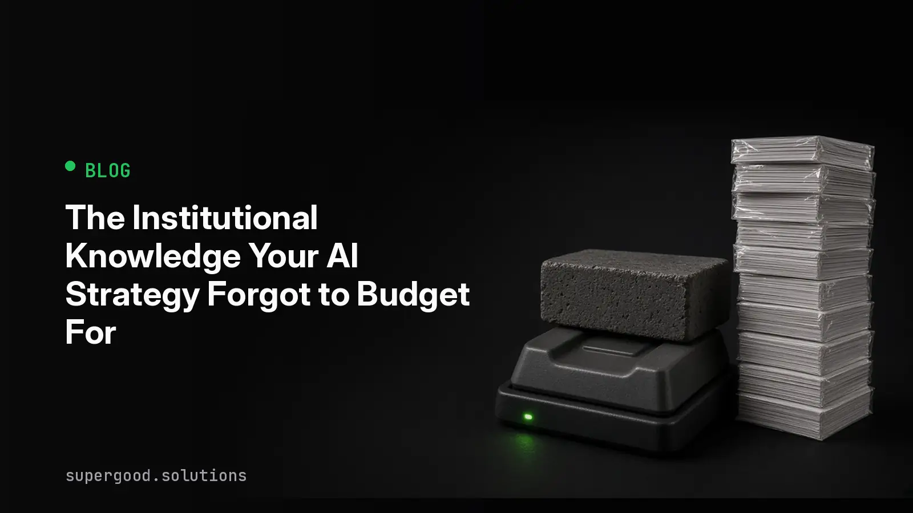

The Institutional Knowledge Your AI Strategy Forgot to Budget For
TL;DR: AI makes specs, tickets, and code nearly free to produce, but understanding them still costs a human's time. If nobody pays that cost, you are building a pile of artifacts that nobody can explain, and the bill arrives during the next incident or audit.
Key Insight
In September, a developer at a large company described their workplace in a quote that Simon Willison shared. Specs, code, tests, PRDs, tickets, and status reports all came out of Claude Code. Engineers worked 12 to 13 hours a day "just to press enter," and in their words, nobody was reading anything. Management kept asking why delivery was slow if pushing code was no longer the bottleneck.
The answer is that typing was never the bottleneck. Understanding was. A team that skips reading has not removed the cost of understanding. It has moved the cost to a later date and added interest.
This is not an argument against AI-generated work. It is an argument that generation and ownership are two different line items, and most AI strategies only budget for the first one.
Why Teams Miss This
Output metrics look great. Pull requests merged, tickets closed, documents produced. Every dashboard rewards volume, and AI makes volume cheap, so the numbers climb while the organization's actual grasp of its own systems quietly shrinks.
Peter Naur made the underlying point in 1985 in Programming as Theory Building. A program is not its source text. It is the shared theory in the heads of the people who built it: why it works this way, what it deliberately does not do, where it will break. Lose the people with the theory and the code becomes very hard to change safely, however clean it looks.
AI-generated artifacts have a sharper version of this problem. Nobody ever held the theory, because nobody read the output closely enough to form one. Three things then go wrong together:
- Reorgs remove the one person who skimmed the doc, and the next owner inherits a system with no author and no explanation.
- Incidents demand a root cause, and the only record of intent is a ticket resolution that the model wrote about its own work.
- Audits and regulatory reviews ask who approved a decision and why. "The model drafted it and it passed CI" is not an answer a compliance team can accept.
How to Actually Do It
Treat comprehension as a gate with a named owner, the same way you treat security review. The goal is not to slow generation down. It is to make sure every artifact that matters has at least one person who can explain it without re-prompting the model.
- Name an owner on every artifact that ships. Not the person who ran the prompt, the person who will answer the pager. Put it in the PR template or the ticket schema so it cannot be skipped.
- Require a human-written "why" for anything non-trivial. Two or three sentences on intent and tradeoffs, written by the owner. If they cannot write it, they have not read the diff.
- Sample for understanding, not just correctness. Once a sprint, pick a merged change at random and ask its owner to explain it with no model open. Track the pass rate like you track test coverage.
- Tier the rules by blast radius. A throwaway internal script needs no ceremony. Payment logic, access control, data retention, and anything an auditor will ask about needs a real reader.
- Log provenance. Record which model and prompt produced each artifact and who reviewed it. A simple trailer in the commit message is enough to start.
A minimal commit trailer that makes ownership and review auditable:
git commit -m "Add retry policy to billing sync
Why: provider 429s were dropping invoices silently; retries are
capped at 3 because duplicates cost more than delays.
Generated-by: claude-code
Owner: jlee
Reviewed-by: mpatel"Then a one-line check in CI can reject changes under your high-risk paths that are missing an Owner or Reviewed-by line:
git log -1 --format=%B | grep -E '^(Owner|Reviewed-by):' | wc -lWhat We've Learned
The fastest teams with AI are not the ones that read nothing. They are the ones that decided where reading is mandatory and spent their human attention there on purpose.
Next experiment: pick the three highest-risk areas of your codebase and ask each owner to explain a recent AI-assisted change out loud, without the model. Count how many can. That number is your continuity gap, and it is cheaper to measure now than after the person who understood it leaves.
Sources
- Simon Willison, quote from voxium on Claude Code at a large company: A quote from voxium
- Peter Naur, the program as a theory held by its builders: Programming as Theory Building
Have a specific workflow in mind?
The fit check comes first. It takes about 2 minutes. If it's a fit, Ryan follows up to schedule the paid Quick Scan ($1,000): a live working session where we'll tell you honestly whether it should be an agent, a workflow, or left alone, before you spend a dollar building it. You get 3 prioritized recommendations on the call, a one-page summary after, and the fee is credited toward a build if you sign within 14 days.
Get new posts + practical agent-ops notes
One email when something new goes up. No nurture sequence, no spam — unsubscribe whenever you want.